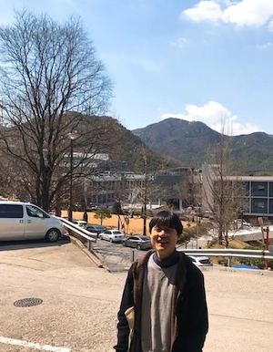

Sanghyuk Moon (문상혁)

About
I am a EACOA Fellow at Korea Astronomy and Space Science Institute (KASI).
My research focuses on star formation and the dynamics of the interstellar medium.
I am particularly interested in the detailed physical processes that govern the formation and evolution of prestellar cores within turbulent molecular clouds, aiming to understand the rate and mass spectrum of self-gravitating turbulent fragmentation leading to star formation.
On larger scales, I am also interested in the interplay between large-scale bar-driven inflows, star formation, and further gas transport toward galactic nuclei.
Before joining KASI, I was a postdoctoral research associate at Princeton University (2022-2025).
I received my Ph.D. from Seoul National University in 2022.
 Contact: sanghyuk.moon at princeton dot edu
Contact: sanghyuk.moon at princeton dot edu
Resume: Link to my CV
 Publications: Link to ADS
Publications: Link to ADS
Research
"Turbulent Equilibrium Sphere" – a new model for turbulent prestellar cores
A classical model for the structure and stability of prestellar cores is the Bonnor-Ebert sphere (BES).
However, the BES does not take into account the internal turbulent motions within the cores, which are inherited from their turbulent formation environments.
In
Moon & Ostriker (2024), we obtained a family of quasi-equilibrium solutions for turbulent prestellar cores obeying power-law linewidth–size relations (which we call "turbulent equilibrium sphere" or TES), which fully generalizes the classical Bonnor-Ebert analysis. Based on the stability property of the TES and gravitational potential landscape around cores, we proposed an evolutionary scenario leading to the onset of the collapse.
Prestellar cores in turbulent clouds
Stars form from a dense molecular cloud core, but not every core forms stars.
To understand the physical conditions that determine the onset of the prestellar core collapse, in
Moon & Ostriker (2025a) we conducted a carefully constructed suite of numerical simulations and analyze the dynamical evolution of individual "cores" to identify the critical conditions for collapse.
In
Moon & Ostriker (2025b), we presented physical properties of the cores at the onset of collapse and discuss the implications for the density threshold for star formation, massive prestellar cores, and core mass function.
Our third paper in this series (
Moon & Ostriker 2025c) discusses observational implications focusing on structure, kinematics, and lifetime of prestellar cores.
Star formation in nuclear rings
Galactic centers occupy a unique junction in our understanding of galaxy evolution: They are the sites where the large-scale bar-driven inflows lead to strong starburst, with implications for the launching of galactic winds and the transport of gas into the vicinity of supermassive black holes.
They also provide the closest laboratory to study the star formation in extreme environments.
In a series of papers (
Kim & Moon 2016,
Moon et al. 2021,
2022,
2023), we used controlled numerical simulations to study the effects of various physical processes including gravitational instability, supernova feedback, (time-varying and spatially asymmetric) mass inflows along the bar, and magnetic fields on the star formation in nuclear rings at the barred galaxy centers.
Self-gravity solver for cylindrical mesh
Solving the Poisson equation under the open (vacuum) boundary conditions is a non-trivial problem.
In particular, there has been a lack of efficient algorithm that works in cylindrical/spherical grids.
In
Moon, Kim, & Ostriker (2019), we showed that the algorithm introduced by
James (1977) (see also
Lackner (1976)) can be generalized to curvilinear coordinate systems, providing an efficient self-gravity solver in cylindrical grid.
A version of the Athena++ code that implements this algorithm in 3D Cartesian and cylindrical grids can be found in
https://github.com/sanghyukmoon/athena.
Simulation Gallery
Link to the page
Last update : Oct 2, 2025